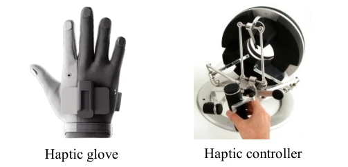
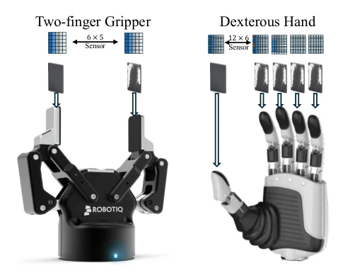
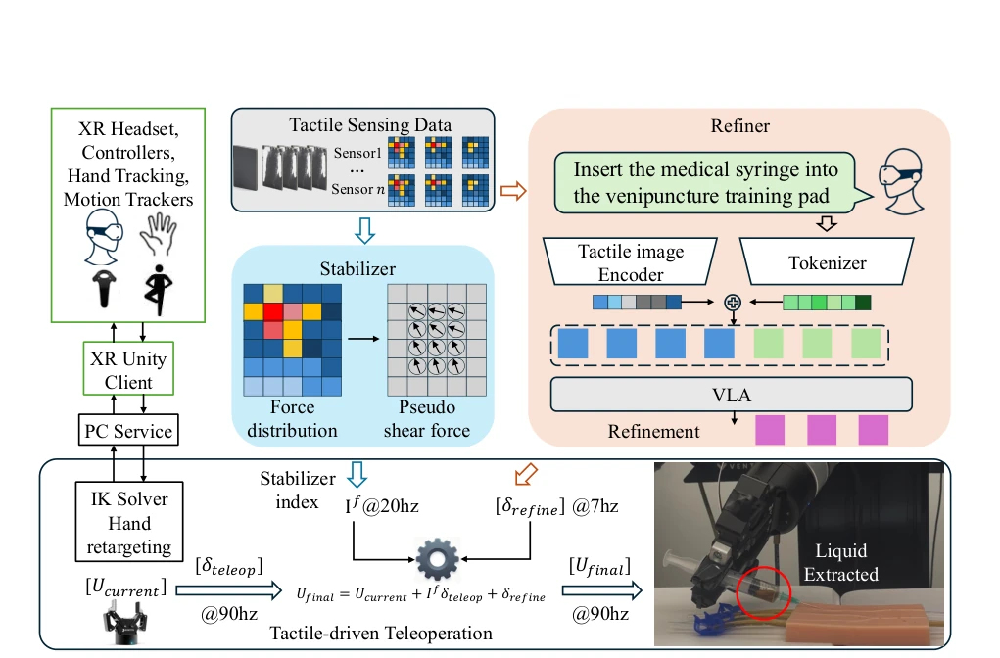
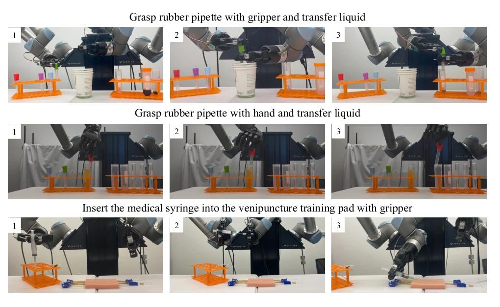
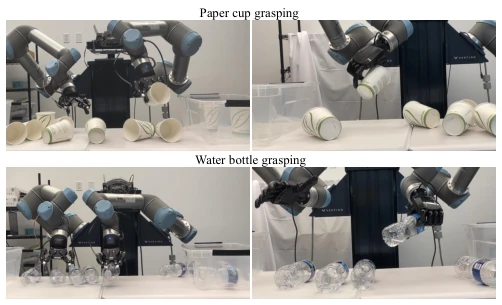
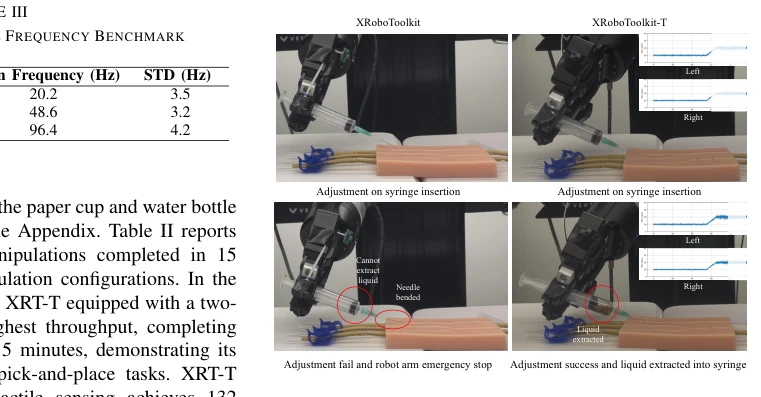

This paper adds a "haptic bodyguard" to contact manipulation. XRoboToolkit-T is essentially a patch on an existing teleoperation framework, using haptic data to prevent hand tremors and loss of force control. The highlights are the "pseudo shear force" estimation and VLA fine-tuning, which sound impressive, but upon closer thought, pseudo shear force is actually calculated based on pressure center movement, which is a bit of a shortcut. The VLA model replaces RGB with tactile maps, which is indeed reasonable for contact tasks, after all, eyes cannot see microscopic contact. However, experiments focus mainly on simple insertion and grasping, high-difficulty tasks like surgical suturing haven't shown their true worth yet. Moreover, although the 96Hz control frequency is high, it relies on haptic sensor hardware, raising doubts about generalizability. Overall, it is a practical engineering improvement, but theoretical innovation is limited, belonging to a robust work of "adding ingredients without price increase". It solves the pain point of unstable force control, but does not solve the problem of data generalization.
In contact-rich manipulation tasks, vision alone is insufficient, and force feedback is crucial. Existing teleoperation schemes [2], [3] are often unstable when handling flexible objects or requiring fine force control. For example, Twist2 [3] has strong scalability but lacks haptic assistance, making operators prone to triggering emergency stops due to excessive force caused by hand tremors. Data gloves [1] can feedback force, but have slow response and insufficient information, unable to correct actions in real-time. XR devices [13] provide immersive experiences, but still have blind spots in contact dynamics perception. Existing VLA models [18], [19] rely mainly on vision, lack haptic modalities, and struggle to reason about contact dynamics. Therefore, how to design a teleoperation framework that can utilize haptic assistance for force control in real-time is a key bottleneck in collecting high-quality contact data. This paper aims to solve the problem of existing systems lacking high-frequency stable haptic feedback, improving data collection efficiency.

Fig. 1. Current data collection solutions with force feedback.
The system is built based on XRoboToolkit [2], with the core being a haptic-driven control architecture. The overall Pipeline is divided into three stages: Perception, Assistance, Execution. First, the tactile perception module uniformly processes pressure grid data from different sensors (such as Robotiq grippers or Realhand dexterous hands), synchronizing robot kinematic information. The core innovation lies in two assistance modules: 1) Contact Force Stabilizer (Stabilizer): Runs at 20Hz, inferring "pseudo shear force" by analyzing temporal changes in normal force distribution of the tactile array. When detecting violent fluctuations of the pressure center or excessive shear force, the operation command gain coefficient If is reduced to suppress unstable actions. 2) Action Refiner (Refiner): Based on VLA model, runs at 7Hz. Inputs are tactile images (pressure distribution) and task language instructions, outputting corrected displacement δrefine in Cartesian space. The final control command Ufinal fuses the original operation command, the stabilizer-modulated command, and the VLA correction amount. This multi-timescale fusion mechanism ensures high-frequency stability while utilizing VLA's semantic understanding capability for macroscopic correction. The system supports hand-eye tracking and controller input, achieving low-latency bidirectional communication via PC Service.

Fig. 2. Tactile sensing for two-finger grippers and dexterous hands. The system supports both end-effectors with integrated tactile sensors and external third-party tactile sensing modules.

Fig. 3. Overview of the XRoboToolkit-T teleoperation system. The framework integrates a tactile stabilizer and a tactile refiner to assist teleoperation, improving stability and enabling reliable data collection for contact-rich manipulation tasks.
Experiments were conducted on a dual UR5e robotic arm platform, configured with dual-finger grippers (with 6x5 tactile sensors) and a dexterous hand (Realhand L6, with 12x6 sensors). Tasks cover medical syringe insertion into vascular training pads, rubber pipette liquid transfer, and water bottle/paper cup grasping. Baselines compared XRoboToolkit [2] without haptics and Twist2 [3]. Main metrics are successful operation count within 15 minutes, control frequency, and qualitative success rate. Results show XRT-T completed 138 successful grasps (dual-finger) within 15 minutes, outperforming Twist2's 128. Control frequency increased from 20.2Hz to 96.4Hz. In qualitative experiments, without haptic assistance, syringe needle bending caused failure, while XRT-T successfully extracted liquid. Ablation studies show that combining the stabilizer and VLA refiner yielded the best results (9.6 times/min), using stabilizer or refiner alone yielded secondary results, proving the effectiveness of multi-scale haptic assistance.

Fig. 4. Contact-rich manipulation application overview. The medical syringe insertion and rubber pipette liquid transfer task require stable and precise teleoperation for different end-effectors.

Fig. 5. Dual arm grasping using both gripper and dexterous hand.

Fig. 6. Qualitative comparison between XRoboToolkit and XRoboToolkit- T on the syringe insertion task. Without tactile feedback (left), the needle bends during insertion. With tactile-driven assistance (right), the system per- forms micro-adjustments during insertion and successfully extracts liquid.